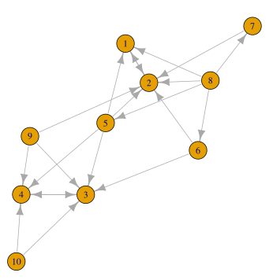
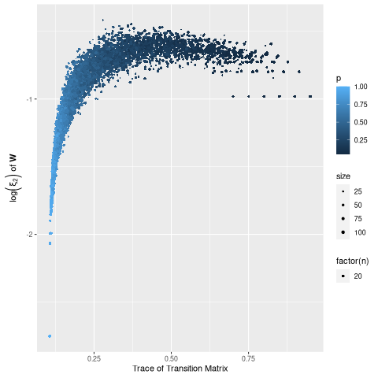
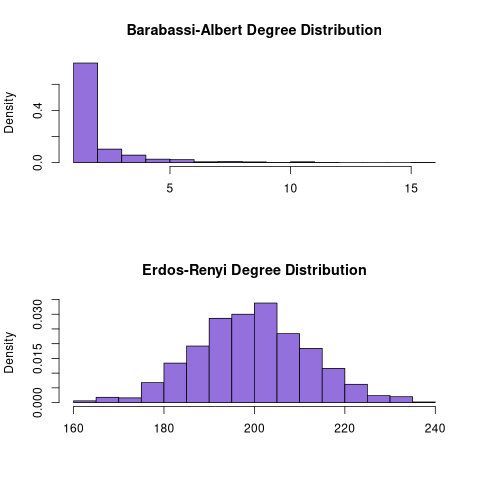
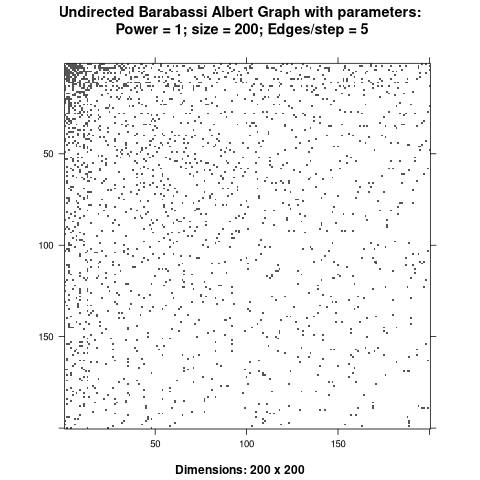

Page Rank
Table of Contents
- 1. Introduction
- 2. Mathematics of Page Rank
- 3. Sparse Matrices
- 4. Implementing the Models
- 4.1. Implementing the Random Surfer
- 4.2. Power Walk Method
- 5. Creating a Package
- 6. Erdos Renyi Graphs
- 7. Barabasi Albert Graphs
- 8. Relating the Power Walk to the Random Surfer
- 9. Appendix
- 10. my to do list
1 Introduction
Any collection of interconnected information can form a network structure, consider for example citations, webpages, wikis, power grids, wiring diagrams, encyclopedias and interpersonal relationships. The analysis of these networks can be used to draw insights about the behaviour of such networks.
One important form of analysis is netowork centrality, a concept concerned with the measure of the importance, popularity and relevance of a node. In a relatively small graph, visualised in such a way so as to minimise the overlapping of edges, a general expectation would be that the centrality score would be correlated with geometric-centrality, this is demonstrated in figure example-rs-graph where the 2nd vertex has the highest PageRank score and is geometrically very central.
1.1 The PageRank Method
There are multiple ways to measure network centrality but this report is concerned with the PageRank method, this method asserts that the centrality of a vertex can be measured by the frequency of incidence with that vertex during a random walk.
This approach only makes sense if the random walk can:
- Traverse the entire network
- Escape dead ends on a directed graph
and so the PageRank method involves:
- Altering a corresponding transition probability matrix such that it corresponds to a stochastic primitive Markov Chain.
- Considering the stationary distribution of this new graph.
1.2 Power Walk and the Random Surfer
The typical method to adjust the transition probability matrix is the Random Surfer, introduced by Page and Brin in 1998 (Page and Brin, n.d.) as a distinguishing feature of the Google search engine, this aproach essentially introduces some probability of teleporting to other nodes during a random walk, this is illustrated in figure fig:rseg.
A shortcoming of this approach is that it assumes all edges are positively weighted. This menas that the model treats any link as an endorsement of the destination node, this may not necessarily always be true (consider for exmple burned-in advertisements or negative reviews). In the past attributing weights to links was not particularly feasible, recent developments in sentiment analysis has however made this possible meaning that this limitation is more significant.
The Power Walk approach, introduced by Park and Simoff in 2013 (Park and Simoff, n.d.) is an alternative way to create a transition probability matrix that is defined for real weighted edges and could be used with sentiment analysis to more effectively measure network centrality.
These individual appraches are discussed in more detail at PageRank-Generally.
1.3 Stability and Convergence
The rate at which the algorithm for PageRank converges to a solution and the stability of that solution can both be measured by the second eigenvalue of the corresponding transition probability matrix (The details of this are discussed at second-eigenvalue).
It is not clear how the second eigenvalue is related to the method parameters of the Power Walk algorithm (\textsection Park and Simoff, n.d., 3.4) and this report aims to:
- Implement methods to perform PageRank analysis using:
- The Random Surfer model
- The Power Walk model
- Investigate the Relationship between the parameters of the Power Walk transition probability matrix and the second eigenvalue
2 Mathematics of Page Rank
2.1 The Stationary Distribution of a Probability Transition Matrix
A graph can be expressed as an adjacency matrix \(\mathbf{A}\):
\[ A_{i,j} \in \left\{ 0,1 \right\} \]
Where each element of the matrix indicates whether or not travel from vertex \(j\) to vertex \(i\) is possible with a value of 1. 1
During a random walk the probability of arriving at vertex \(j\) from vertex \(i\) can similarly be described as an element of a transition probability matrix \(\mathbf{T}_{i,j}\), this matrix can be described by the following relationship 2:
\begin{align} \mathbf{T} &= \mathbf{A} \mathbf{D}^{-1}_{\mathbf{A}} \label{eq:basic-trans-def} : \\ & \mathbf{D}_{\mathbf{A}} = \mathrm{diag}\left(\vec{1} \mathbf{A}\right) \label{eq:diagScaleDef} \end{align}The value of \(\mathbf{D}\) is such that under matrix multiplication \(\mathbf{A} \) will have columns that sum to 1 (i.e. a column stochastic matrix, see \textsection definitions), for a reducible or non-stochastic graph the definition of \(\mathbf{D}\) would need to be adjusted to acheive this, this is discussed below
During the random walk, the running tally of frequencies, at the \(i^{\mathrm{th}}\) step of the walk, can be described by a vector \(\vec{p}\), this vector can be determined for each step by matrix multiplication:
\begin{align} \vec{p_{i+1}} = \mathbf{T}\vec{p_{i}} \label{eq:recurrence} \end{align}This relationship is a linear recurrence relation, more importantly however it is a Markov Chain (\textsection Langville and Meyer, n.d., 4.4).
Finding the Stationary point for this relationship will give a frequency distribution for the nodes and a metric to measure the centrality of vertices.
2.2 Random Surfer Model
2.2.1 Problems with the Stationary Distribution
The approach in 2 has the following issues
- Convergence of \eqref{eq:recurrence}
- Will this relationship converge or diverge?
- How quickly will it converge?
- Will it converge uniquely?
- Reducible graphs
- If it is not possible to perform a random walk across an entire graph for all initial conditions, this approach doesn’t have a clear analogue.
- Cycles
- A graph that is cyclical may not converge uniquely
- Consider for example the graph \(A\rightarrow B\).
- A graph that is cyclical may not converge uniquely
2.2.2 Markov Chains
The relationship in \eqref{eq:recurrence} is a Markov Chain and it is known that the power method will converge: 3
- for a stochastic irreducible markov chain (\textsection Fouss, Saerens, and Shimbo, n.d., 1.5.5),
- regardless of the initial condition of the process for an aperiodic Markov chain (\textsection Langville and Meyer, n.d., 4.4)
2.2.2.1 Stochastic
If a vertex had a 0 outdegree the corresponding column sum for the adjacency matrix describing that graph would also be zero and the matrix non-stochastic, this could occur in the context of a random walk where a link to a page with no outgoing links was followed (e.g. an image), this would be the end of the walk.
So to ensure that \eqref{eq:recurrence} will converge, the probability transition matrix must be made stochastic, to acheive this a uniform probability of teleporing from a dead end to any other vertex can be introduced:
\begin{align} \mathrm{S} = \mathrm{T}+ \frac{\vec{a} \cdot \vec{1}^{\mathrm{T}} }{n} \label{eq:nearly-random-surfer} \end{align}This however would not be sufficient to ensure that \eqref{eq:recurrence} would converge, in addition the transition probability matrix must be made irreducible and aperiodic (i.e. primitive). (Langville and Meyer, n.d.)

Figure 1: \(D\) is a dangling node, a dead end during a random walk, the corresponding probability transition matrix \((\mathbf{T})\) is hence non-stochastic (and also reducible), Introducing some probability of teleporting from a dead end to any other vertex as per \eqref{eq:nearly-random-surfer} (denoted in red) will cause \(\mathbf{T}\) to be stochastic.
2.2.2.2 Irreducible
A graph that allows travel from any given vertex to any other vertex is said to be irreducible (Langville and Meyer, n.d.), see for example figure 2, this is important in the context of a random walk because only in an irreducible graph can all vertexes be reached from any initial condition.

Figure 2: Example of a reducible graph, observe that although \(C\) is not a dead end as discussed in 2.2.2.1, there is no way to travel from \(C\) to \(A\), by adding an edge such an edge in the resulting graph is irreducible. The resulting graph is also aperiodic (due to the loop on \(B\)) and stochastic, so there will be a stationary distribution corresponding to \eqref{eq:recurrence}.
2.2.2.3 Aperiodic
An a periodic graph has only one eigenvalue that lies on the unit circle, this is important because \(\lim_{k\rightarrow \infty} \left( \frac{\mathbf{A}}{r}^{k} \right) \) exists for a non-negative irreducible matrix \(\mathbf{A}\) if and only if \mathbf{A} is aperiodic. A graph that is a periodic can be made aperiodic by interlinking nodes 4

Figure 3: A periodic graph with all eigenvalues on the unit circle \(\xi = \frac{\sqrt{2}}{2} e^{\frac{\pi i}{4} k}\), by adding in extra edges the graph is now aperiodic, this does not represent the random surfer model, which would in theory connect every vertex but with some probability.
2.2.2.4 The Fix
To ensure that the transition probability matrix is primitive (i.e. irreducible and aperiodic) as well as stochastic, instead of introducing the possible to teleport out of dead ends, introduce a probability of teleporting to any node at any time (\(\alpha \)), this approach is known as the Random Surfer model and the transition probability matrix is given by (Page and Brin, n.d.) :
\begin{align} \mathbf{S} = \alpha \mathbf{T} + \frac{(1- \alpha)}{n} \mathbf{J} \label{eq:random-surfer} \end{align}This matrix is primitive and stochastic and so will converge (it is also unfourtunately completely dense, see 3.1 (\textsection Langville and Meyer, n.d., 4.5).
The relation ship in \eqref{eq:recurrence} can now be re expressed as:
\begin{align} \vec{p_{i+1}} \rightarrow \mathbf{T} \vec{p}_{i} \label{eq:random-surfer-recurrence} \end{align}
Figure 4: A graph that is aperiodic, reducible and non-stochastic, by applying the random surfer model \eqref{eq:random-surfer} blue teleportation edges are introduced, these may be followed with a probability of \(1 - \alpha \)
2.2.3 Limitations
The Random Surfer Model can only consider positively weighted edges, it cannot take into account negatively weighted edges. This limitation is increasingly important as techniques of sentiment analysis are developed which could indicate that links promote aversion rather than endorsement (e.g. a negative review or an innapropriate advertisement).
2.3 Power walk
The Power Walk method is an alternative approach to develop a probability transition matrix to use in place of \eqref{eq:recurrence}.
Let the probability of travelling to a non-adjacent vertex be some value \(x\) and \(\beta\) be the ratio of probability between following an edge or teleporting to another vertex.
This transition probability matrix would be such that the probability of travelling some vertex \(j \rightarrow i\) would be :
\begin{align} \mathbf{W}_{i, j} = x\beta^{\mathbf{A_{i,j}}} \label{eq:prob-power-walk} \end{align}Where \(\mathbf{W}\) denotes the power walk probability transition matrix.
Whe probability of travelling to any given vertex must be 1 and so:
\begin{align} 1 &= \sum^{n}_{j= 1} \left[ x \beta^{\mathbf{A_{i,j}}} \right] \\ \implies x&= \left( \sum^{n}_{j= 1} \beta^{\mathbf{A_{i,j}}} \right)^{-1} \label{eq:powerwalk-x-val} \end{align}Substituting the value of \(x\) from \eqref{eq:powerwalk-x-val} into \eqref{prob-power-walk} gives the probability as:
\begin{align} \mathbf{W}_{i,j} &= \frac{\beta^{\mathbf{A}__i,j}}{\sum^{n}_{i=j} \left[ \beta^{\mathbf{A}_{i,j}} \right] } \end{align}In this model all vertices are interconnected by some probability of jumping to another vertex, so much like the random surfer model \eqref{eq:random-surfer} discussed at 2.2.2.4 \(\mathbf{W}\) will be a primitive stochastic matrix and so if \(\mathbf{W}\) was used in place of \(\mathbf{T}\) in \eqref{eq:recurrence} a solution would exist.
3 Sparse Matrices
Most Adjacency matrices resulting from webpages and analagous networks result in sparse adjacency matrices (see figure 14), this is a good thing because it requires far less computational resources to work with a sparse matrix than a dense matrix (\textsection Langville and Meyer, n.d., 4.2) .
Sparse matrices can be expressed in alternetive forms so as to reduce the memory footprint associated with that matrix, one such method is the Compressed Row Storage method, this involves listing the elements as a table as in \eqref{eq:ordinary} and \eqref{eq:crc}.
This is implemented in R with the Matrix package
(NO_ITEM_DATA:batesMatrixSparseDense2019a) .
3.1 Solving the Stationary Distribution
The relationship in \eqref{eq:recurrence} 5 is equivelant to the eigenvalue value problem, where \(\vec{p} = \lim_{i \rightarrow \infty} \left( \vec{p_{i}}\right)\) is the eigenvector 6 \( \vec{x} \) that corresponds to the eigenvalue \(\xi=1\):
\begin{align} \vec{p} (1) = \mathbf{S} \vec{p} \label{eq:eigenprob} \end{align}Solving eigenvectors for large matrices can be very resource intensive and so this approach isn’t suitable for analysing large networks.
Upon iteration \eqref{eq:recurrence} will converge to stable stationary point, as discussed in 2.2.2.4, this approach is known as the power method (Larson and Edwards, n.d.) and is what in practice must be implemented to solve the stationary distribution of \eqref{eq:random-surfer-recurrence} and \eqref{eq:recurrence}.
As mentioned in 2.2.2.4 and 2.3, the Random Surfer and Power Walk transtition probability matrices are completely dense, that means applying the power method will not be able to take advantage of using sparse matrix algorithms.
With some effort however it is possible to express the algorithms in such a way that only involves sparse matrices.
4 Implementing the Models
To Implement the models, first they’ll be implemented using an ordinary matrix and then improved to work with sparse matrices and algorithms, the implementation has been performed with R and the preamble is provided in listings 1
if (require("pacman")) { library(pacman) }else{ install.packages("pacman") library(pacman) } pacman::p_load(tidyverse, Matrix, igraph, plotly, mise, docstring, mise, corrplot, latex2exp) # options(scipen=20) # Resist Scientific Notation
..
4.0.1 Example Graph
Consider the following graph:
g1 <- igraph::graph.formula( 1++2, 1+-8, 1+-5, 2+-5, 2+-7, 2+-8, 2+-6, 2+-9, 3++4, 3+-5, 3+-6, 3+-9, 3+-10, 4+-9, 4+-10, 4+-5, 5+-8, 6+-8, 7+-8) plot(g1)

Figure 6: Exemplar graph for PageRank examples, produced in listing ex-fig-r
4.1 Implementing the Random Surfer
4.1.1 Ordinary Matrices
4.1.1.1 Adjacency Matrix
The adjacency Matrix is given by:
A <- igraph::get.adjacency(g1, names = TRUE, sparse = FALSE) ## igraph gives back the transpose (A <- t(A))
1 2 8 5 7 6 9 3 4 10 1 0 1 1 1 0 0 0 0 0 0 2 1 0 1 1 1 1 1 0 0 0 8 0 0 0 0 0 0 0 0 0 0 5 0 0 1 0 0 0 0 0 0 0 7 0 0 1 0 0 0 0 0 0 0 6 0 0 1 0 0 0 0 0 0 0 9 0 0 0 0 0 0 0 0 0 0 3 0 0 0 1 0 1 1 0 1 1 4 0 0 0 1 0 0 1 1 0 1 10 0 0 0 0 0 0 0 0 0 0
1 2 8 5 7 6 9 3 4 10 1 0 1 1 1 0 0 0 0 0 0 2 1 0 1 1 1 1 1 0 0 0 8 0 0 0 0 0 0 0 0 0 0 5 0 0 1 0 0 0 0 0 0 0 7 0 0 1 0 0 0 0 0 0 0 6 0 0 1 0 0 0 0 0 0 0 9 0 0 0 0 0 0 0 0 0 0 3 0 0 0 1 0 1 1 0 1 1 4 0 0 0 1 0 0 1 1 0 1 10 0 0 0 0 0 0 0 0 0 0
4.1.1.2 Probability Transition Matrix
The probability transition matrix is such that each column of the initial state distribution (i.e. the transposed adjacency matrix) is scaled to 1.
if \(\mathbf{A}\) had vertices with a 0 out-degree, the relationship in \eqref{eq:basic-trans-def} would not work, instead columns that sum to 0 would need to be left while all other columns be divided by the column sum to get \(\mathbf{T}\). An alternative approach using sparse matrices will be presented below and in this case there exists corresponding \(\mathbf{T}\) that is stochastic and so it is sufficient to use the relationship at \eqref{eq:basic-trans-def}, this is shown in listing 4.
(T <- A %*% diag(1/colSums(A)))
[,1] [,2] [,3] [,4] [,5] [,6] [,7] [,8] [,9] [,10] 1 0 1 0.2 0.25 0 0.0 0.0000000 0 0 0.0 2 1 0 0.2 0.25 1 0.5 0.3333333 0 0 0.0 8 0 0 0.0 0.00 0 0.0 0.0000000 0 0 0.0 5 0 0 0.2 0.00 0 0.0 0.0000000 0 0 0.0 7 0 0 0.2 0.00 0 0.0 0.0000000 0 0 0.0 6 0 0 0.2 0.00 0 0.0 0.0000000 0 0 0.0 9 0 0 0.0 0.00 0 0.0 0.0000000 0 0 0.0 3 0 0 0.0 0.25 0 0.5 0.3333333 0 1 0.5 4 0 0 0.0 0.25 0 0.0 0.3333333 1 0 0.5 10 0 0 0.0 0.00 0 0.0 0.0000000 0 0 0.0
4.1.1.2.1 Create a Function
adj_to_probTrans <- function(A) { A %*% diag(1/colSums(A)) } (T <- adj_to_probTrans(A)) %>% round(2)
[,1] [,2] [,3] [,4] [,5] [,6] [,7] [,8] [,9] [,10] 1 0 1 0.2 0.25 0 0.0 0.00 0 0 0.0 2 1 0 0.2 0.25 1 0.5 0.33 0 0 0.0 8 0 0 0.0 0.00 0 0.0 0.00 0 0 0.0 5 0 0 0.2 0.00 0 0.0 0.00 0 0 0.0 7 0 0 0.2 0.00 0 0.0 0.00 0 0 0.0 6 0 0 0.2 0.00 0 0.0 0.00 0 0 0.0 9 0 0 0.0 0.00 0 0.0 0.00 0 0 0.0 3 0 0 0.0 0.25 0 0.5 0.33 0 1 0.5 4 0 0 0.0 0.25 0 0.0 0.33 1 0 0.5 10 0 0 0.0 0.00 0 0.0 0.00 0 0 0.0
## [,1] [,2] [,3] [,4] [,5] [,6] [,7] [,8] [,9] [,10] ## 1 0 1 0 0 0.25 0.0 0 0.2 0.00 0.0 ## 2 1 0 0 0 0.25 0.5 1 0.2 0.33 0.0 ## 3 0 0 0 1 0.25 0.5 0 0.0 0.33 0.5 ## 4 0 0 1 0 0.25 0.0 0 0.0 0.33 0.5 ## 5 0 0 0 0 0.00 0.0 0 0.2 0.00 0.0 ## 6 0 0 0 0 0.00 0.0 0 0.2 0.00 0.0 ## 7 0 0 0 0 0.00 0.0 0 0.2 0.00 0.0 ## 8 0 0 0 0 0.00 0.0 0 0.0 0.00 0.0 ## 9 0 0 0 0 0.00 0.0 0 0.0 0.00 0.0 ## 10 0 0 0 0 0.00 0.0 0 0.0 0.00 0.0
4.1.1.3 Page Rank Random Surfer
Recall from 2.2.2.4 the following variables of the Random Surfer model:
\begin{align} \mathbf{B} &= \alpha T + \left( 1- \alpha \right)B :\\ \ \\ \mathbf{B}&= \begin{bmatrix} \frac{1}{n} & \frac{1}{n} & \ldots & \frac{1}{n} \\ \frac{1}{n} & \frac{1}{n} & \ldots & \frac{1}{n} \\ \vdots & \vdots & \ddots & \vdots \\ \frac{1}{n} & \frac{1}{n} & \ldots & \frac{1}{n} \\ \end{bmatrix} \label{eq:bgval1} \\ n&= \left| \left| V \right| \right| \\ \alpha &\in [0,1] \end{align}These are assigned to R variables in listing 5.
B <- matrix(rep(1/nrow(T), length.out = nrow(T)**2), nrow = nrow(T)) l <- 0.8123456789 (S <- l*T+(1-l)*B) %>% round(2)
[,1] [,2] [,3] [,4] [,5] [,6] [,7] [,8] [,9] [,10] 1 0.02 0.83 0.18 0.22 0.02 0.02 0.02 0.02 0.02 0.02 2 0.83 0.02 0.18 0.22 0.83 0.42 0.29 0.02 0.02 0.02 8 0.02 0.02 0.02 0.02 0.02 0.02 0.02 0.02 0.02 0.02 5 0.02 0.02 0.18 0.02 0.02 0.02 0.02 0.02 0.02 0.02 7 0.02 0.02 0.18 0.02 0.02 0.02 0.02 0.02 0.02 0.02 6 0.02 0.02 0.18 0.02 0.02 0.02 0.02 0.02 0.02 0.02 9 0.02 0.02 0.02 0.02 0.02 0.02 0.02 0.02 0.02 0.02 3 0.02 0.02 0.02 0.22 0.02 0.42 0.29 0.02 0.83 0.42 4 0.02 0.02 0.02 0.22 0.02 0.02 0.29 0.83 0.02 0.42 10 0.02 0.02 0.02 0.02 0.02 0.02 0.02 0.02 0.02 0.02
4.1.1.3.1 Eigen Value Method
The eigenvector corresponding to the the eigenvalue of 1 will be the stationary point, this is shown in listing 6
print(eigen(S, symmetric = FALSE, only.values = TRUE)$values, 9) print(eigen(S, symmetric = FALSE)$vectors, 3)
[1] 1.00000000e+00+0.0000000e+00i -8.12345679e-01+0.0000000e+00i
[3] 8.12345679e-01+0.0000000e+00i -8.12345679e-01+0.0000000e+00i
[5] 5.81488197e-10+0.0000000e+00i -5.81487610e-10+0.0000000e+00i
[7] -6.74980227e-16+0.0000000e+00i 3.21036747e-17+0.0000000e+00i
[9] 1.34928172e-18+1.1137323e-17i 1.34928172e-18-1.1137323e-17i
[,1] [,2] [,3] [,4] [,5]
[1,] 0.4873+0i -7.07e-01+0i 5.00e-01+0i -2.07e-03+0i -6.74e-01+0i
[2,] 0.5268+0i 7.07e-01+0i 5.00e-01+0i 2.07e-03+0i -9.62e-02+0i
[3,] 0.0424+0i 9.09e-18+0i -3.50e-17+0i -5.05e-17+0i 1.38e-09+0i
[4,] 0.0493+0i -1.25e-18+0i -1.65e-16+0i 4.25e-17+0i 3.85e-01+0i
[5,] 0.0493+0i -8.30e-18+0i -3.75e-17+0i 3.71e-17+0i 3.85e-01+0i
[6,] 0.0493+0i -8.30e-18+0i -3.75e-17+0i 9.76e-18+0i 3.85e-01+0i
[7,] 0.0424+0i -1.32e-18+0i -3.50e-17+0i 1.60e-17+0i -3.01e-08+0i
[8,] 0.4915+0i -2.98e-03+0i -5.00e-01+0i -7.07e-01+0i -9.62e-02+0i
[9,] 0.4804+0i 2.98e-03+0i -5.00e-01+0i 7.07e-01+0i -2.89e-01+0i
[10,] 0.0424+0i 5.57e-18+0i -3.77e-17+0i 3.14e-18+0i -3.24e-08+0i
[,6] [,7] [,8] [,9]
[1,] 6.74e-01+0i 6.53e-01+0i -2.15e-01+0i -2.00e-01+1.53e-01i
[2,] 9.62e-02+0i 1.09e-01+0i -1.96e-01+0i -1.59e-01+0.00e+00i
[3,] 1.38e-09+0i 1.42e-15+0i -2.84e-16+0i -6.73e-17+1.32e-16i
[4,] -3.85e-01+0i -4.37e-01+0i 7.85e-01+0i 6.37e-01+0.00e+00i
[5,] -3.85e-01+0i -3.56e-01+0i 2.81e-01+0i 2.84e-02-1.63e-01i
[6,] -3.85e-01+0i -3.58e-01+0i -3.68e-01+0i 4.84e-02-2.68e-01i
[7,] -3.01e-08+0i -2.63e-02+0i -2.34e-01+0i -3.47e-02+4.29e-01i
[8,] 9.62e-02+0i 1.32e-01+0i -6.40e-02+0i -1.09e-01-2.84e-01i
[9,] 2.89e-01+0i 3.11e-01+0i 1.20e-01+0i -1.34e-01-1.50e-01i
[10,] -3.24e-08+0i -2.82e-02+0i -1.08e-01+0i -7.64e-02+2.83e-01i
[,10]
[1,] -2.00e-01-1.53e-01i
[2,] -1.59e-01-0.00e+00i
[3,] -6.73e-17-1.32e-16i
[4,] 6.37e-01+0.00e+00i
[5,] 2.84e-02+1.63e-01i
[6,] 4.84e-02+2.68e-01i
[7,] -3.47e-02-4.29e-01i
[8,] -1.09e-01+2.84e-01i
[9,] -1.34e-01+1.50e-01i
[10,] -7.64e-02-2.83e-01i
So in this case the stationary point corresponds to the eigenvector given by: \[ \langle -0.49, -0.53, -0.49, -0.48, -0.05, -0.05, -0.05, -0.04, -0.04, -0.04 \rangle \]
this can be verified by using identity \eqref{eq:eigenprob}:
\[ 1 \vec{p} = S\vec{p} \]
(p <- eigen(S)$values[1] * eigen(S)$vectors[,1]) %>% Re() %>% round(2)
[1] 0.49 0.53 0.04 0.05 0.05 0.05 0.04 0.49 0.48 0.04
(p_new <- S %*% p) %>% Re() %>% as.vector() %>% round(2)
[1] 0.49 0.53 0.04 0.05 0.05 0.05 0.04 0.49 0.48 0.04
However this vector does not sum to 1 so the scale should be adjusted (for probabilities the vector should sum to 1):
(p_new <- p_new/sum(p_new)) %>% Re() %>% as.vector() %>% round(2)
[1] 0.22 0.23 0.02 0.02 0.02 0.02 0.02 0.22 0.21 0.02
4.1.1.3.2 Power Value Method
Using the power method should give the same result as the eigenvalue method, again but for scale:
p_new <- p_new *123456789 while (sum(round(p, 9) != round(p_new, 9))) { (p <- p_new) (p_new <- S %*% p) } round(Re(p_new), 2) %>% as.vector()
[1] 26602900 28759738 2316720 2693115 2693115 2693115 2316720 26834105 [9] 26230539 2316720
If scaled to 1 the same value will be returned:
(p_new <- p_new/sum(p_new)) %>% Re %>% as.vector() %>% round(2)
[1] 0.22 0.23 0.02 0.02 0.02 0.02 0.02 0.22 0.21 0.02
4.1.1.3.3 Scaling
If the initial state sums to 1, then the scale of the stationary vector will also sum to 1, so this isn’t in practice an issue for the power method:
p <- c(1, 0, 0, 0, 0, 0, 0, 0, 0, 0) p_new <- S %*% p while (sum(round(p, 9) != round(p_new, 9))) { (p <- p_new) (p_new <- S %*% p) } cbind(p_new, p)
[,1] [,2]
1 0.21548349 0.21548349
2 0.23295388 0.23295388
8 0.01876543 0.01876543
5 0.02181424 0.02181424
7 0.02181424 0.02181424
6 0.02181424 0.02181424
9 0.01876543 0.01876543
3 0.21735625 0.21735625
4 0.21246737 0.21246737
10 0.01876543 0.01876543
4.1.2 Sparse Matrices
4.1.2.1 Creating the Probability Transition Matrix
Implementing the page rank method on a larger graph requires the use of more efficient form of matrix storage as discussed at 3
A sparse matrix can be created using the following syntax, which will return a
matrix of the class dgCMatrix:
library(Matrix) ## Create Example Matrix n <- 20 m <- 10^6 i <- sample(1:m, size = n); j <- sample(1:m, size = n); x <- rpois(n, lambda = 90) A <- sparseMatrix(i, j, x = x, dims = c(m, m)) summary(A)
1000000 x 1000000 sparse Matrix of class "dgCMatrix", with 20 entries
i j x
1 832961 14530 77
2 410264 57606 97
3 782033 111998 86
4 82383 176945 93
5 110039 239517 103
6 713327 249015 98
7 3377 387382 87
8 183673 466594 90
9 459326 509037 98
10 360156 554024 91
11 697837 573216 106
12 460554 582729 80
13 353957 654474 87
14 941579 683010 108
15 955791 763690 104
16 726278 790608 85
17 317527 867693 90
18 71267 949427 81
19 126551 992218 96
20 723320 992960 84
As before in section 4.1.1.2, the probability transition matrix can be found by:
- Creating adjacency matrix
- Transposing as necessary such that \(\mathbf{A}_{i,j}\neq 0\) indicates that \(j\) is connected to \(i\) by a directed edge.
- Scaling the columns to one
To implement this for a sparseMatrix of the class dgCMatrix, the same
technique of multiplying by a diagonalised matrix as in \eqref{eq:diagScaleDef} may be
implemented, using sparse matrices has the advantage however that only non-zero
elements will be operated on, meaning that columns that some to zero can still
be used to create a probability transition matrix 7
pracice an error however to create this new matrix, a new sparseMatrix will
need to be created using the properties of the original matrix, this can be done
like so:
sparse_diag <- function(mat) { ## Get the Dimensions n <- nrow(mat) ## Make a Diagonal Matrix of Column Sums D <- sparseMatrix(i = 1:n, j = 1:n, x = colSums(mat), dims = c(n,n)) ## Throw away explicit Zeroes D <- drop0(D) ## Inverse the Values D@x <- 1/D@x ## Return the Diagonal Matrix return(D) }
Applying this to the previously created sparse matrix:
D <- sparse_diag(t(A))
summary(D)
1000000 x 1000000 sparse Matrix of class "dgCMatrix", with 20 entries
i j x
1 3377 3377 0.011494253
2 71267 71267 0.012345679
3 82383 82383 0.010752688
4 110039 110039 0.009708738
5 126551 126551 0.010416667
6 183673 183673 0.011111111
7 317527 317527 0.011111111
8 353957 353957 0.011494253
9 360156 360156 0.010989011
10 410264 410264 0.010309278
11 459326 459326 0.010204082
12 460554 460554 0.012500000
13 697837 697837 0.009433962
14 713327 713327 0.010204082
15 723320 723320 0.011904762
16 726278 726278 0.011764706
17 782033 782033 0.011627907
18 832961 832961 0.012987013
19 941579 941579 0.009259259
20 955791 955791 0.009615385
and hence the probability transition matrix may be implemented by performing matrix multiplication accordingly:
summary((T <- t(A) %*% D))
1000000 x 1000000 sparse Matrix of class "dgCMatrix", with 20 entries
i j x
1 387382 3377 1
2 949427 71267 1
3 176945 82383 1
4 239517 110039 1
5 992218 126551 1
6 466594 183673 1
7 867693 317527 1
8 654474 353957 1
9 554024 360156 1
10 57606 410264 1
11 509037 459326 1
12 582729 460554 1
13 573216 697837 1
14 249015 713327 1
15 992960 723320 1
16 790608 726278 1
17 111998 782033 1
18 14530 832961 1
19 683010 941579 1
20 763690 955791 1
4.1.2.2 Solving the Random Surfer via the Power Method
Solving the eigenvalues for such a large matrix will not feasible, instead the power method will need to be used to find the stationary point.
However, creating a matrix of background probabilites (denoted by B in section 4.1.1.3) will not be feasible, it would simply be too large, instead some algebra can be used to reduce \(B\) from a matrix into a vector containing only \(\frac{1-\alpha}{N}\).
The power method is given by:
\begin{align} \vec{p}= \mathbf{S} \vec{p} \end{align}where:
\begin{align} S &= \alpha \mathbf{T} + \left( 1 - \alpha \right) \mathbf{B} \\ \vec{p} &= \left( \alpha \mathbf{T} + \left( 1 - \alpha \right) \mathbf{B} \right) \vec{p}\\ &= \alpha \mathbf{T}\vec{p} + \left( 1-\alpha \right) \mathbf{B} \vec{p} \end{align}Let \(\mathbf{F}= \mathbf{B}\vec{p}\), consider the value of \(\mathbf{F}\) :
\begin{align} \mathbf{F} &= \begin{bmatrix} \frac{1}{N} & \frac{1}{N} & \ldots & \frac{1}{N} \\ \frac{1}{N} & \frac{1}{N} & \ldots & \frac{1}{N} \\ \vdots & \vdots & \ddots & \vdots \\ \frac{1}{N} & \frac{1}{N} & \ldots & \frac{1}{N} \\ \end{bmatrix} \label{eq:bgVal2} \begin{bmatrix} \vec{p_1} \\ \vec{p_2} \\ \vdots \\ \vec{p_m} \end{bmatrix} \\ &= \begin{bmatrix} \left( \sum^{m}_{i= 0} \left[ p_i \right] \right) \times \frac{1}{N} \\ \left( \sum^{m}_{i= 0} \left[ p_i \right] \right) \times \frac{1}{N} \\ \vdots \\ \left( \sum^{m}_{i= 0} \left[ p_i \right] \right) \times \frac{1}{N} \\ \end{bmatrix} \\ & \text{Probabilities sum to 1 and hence:} \\ &= \begin{bmatrix} \frac{1}{N} \\ \frac{1}{N} \\ \frac{1}{N} \\ \vdots \\ \frac{1}{N} \\ \end{bmatrix} \end{align}So instead the power method can be implemented by performing an algorithm that involves only sparse matrices:
## Find Stationary point of random surfer N <- nrow(A) alpha <- 0.85 F <- rep((1-alpha)/N, nrow(A)) ## A nx1 vector of (1-alpha)/N ## Solve using the power method p <- rep(0, length.out = ncol(T)); p[1] <- 1 p_new <- alpha*T %*% p + F ## use a Counter to debug i <- 0 while (sum(round(p, 9) != round(p_new, 9))) { p <- p_new p_new <- alpha*T %*% p + F (i <- i+1) %>% print() } p %>% head() %>% print()
[1] 1
[1] 2
6 x 1 Matrix of class "dgeMatrix"
[,1]
[1,] 1.5e-07
[2,] 1.5e-07
[3,] 1.5e-07
[4,] 1.5e-07
[5,] 1.5e-07
[6,] 1.5e-07
4.2 Power Walk Method
Recall from 2.3 that the power walk is given by:
\begin{align*} \mathbf{T} &= \mathbf{B} \mathbf{D}^{-1}_{B} \end{align*}4.2.1 Ordinary Matrices
Implementing the Power walk using ordinary matrices is very similar to the Random Surfer model be done pretty much the same as it is with the random surfer, but doing it with Sparse Matrices is a bit trickier.
Create the Adjacency Matrix
A <- igraph::get.adjacency(g1, names = TRUE, sparse = FALSE) ## * Function to create Prob Trans Mat adj_to_probTrans <- function(A, beta) { B <- A B <- beta^A # Element Wise exponentiation D <- diag(colSums(B)) # B is completely dense so D ≄ 0 D_in <- solve(D) # Solve returns inverse of matrix W <- B %*% D_in return(as.matrix(W)) } beta <- β <- 0.867 (W <- adj_to_probTrans(A, beta = β)) %>% round(2)
[,1] [,2] [,3] [,4] [,5] [,6] [,7] [,8] [,9] [,10] 1 0.10 0.09 0.1 0.10 0.10 0.10 0.1 0.11 0.11 0.1 2 0.09 0.11 0.1 0.10 0.10 0.10 0.1 0.11 0.11 0.1 8 0.09 0.09 0.1 0.09 0.09 0.09 0.1 0.11 0.11 0.1 5 0.09 0.09 0.1 0.10 0.10 0.10 0.1 0.09 0.09 0.1 7 0.10 0.09 0.1 0.10 0.10 0.10 0.1 0.11 0.11 0.1 6 0.10 0.09 0.1 0.10 0.10 0.10 0.1 0.09 0.11 0.1 9 0.10 0.09 0.1 0.10 0.10 0.10 0.1 0.09 0.09 0.1 3 0.10 0.11 0.1 0.10 0.10 0.10 0.1 0.11 0.09 0.1 4 0.10 0.11 0.1 0.10 0.10 0.10 0.1 0.09 0.11 0.1 10 0.10 0.11 0.1 0.10 0.10 0.10 0.1 0.09 0.09 0.1
Look at the Eigenvalues:
eigen(W, only.values = TRUE)$values %>% round(9) eigen(W)$vectors/sum(eigen(W)$vectors)
[1] 1.000000000+0.000000000i 0.014269902+0.000000000i
[3] -0.014148391+0.000000000i 0.014147087+0.000000000i
[5] 0.007672842+0.004095136i 0.007672842-0.004095136i
[7] 0.000000000+0.000000000i 0.000000000+0.000000000i
[9] 0.000000000+0.000000000i 0.000000000+0.000000000i
[,1] [,2] [,3] [,4]
[1,] 0.10153165+0i 5.107247e-02+0i 0.073531664+0i 0.009918277+0i
[2,] 0.10159353+0i -1.161249e-01+0i 0.071987451+0i -0.009531974+0i
[3,] 0.09609664+0i -2.162636e-01+0i 0.198568750+0i 0.141245296+0i
[4,] 0.09725145+0i 6.794340e-02+0i -0.012230606+0i -0.001148014+0i
[5,] 0.10153165+0i 5.107247e-02+0i 0.073531664+0i 0.009918277+0i
[6,] 0.10008449+0i 1.115133e-01+0i -0.005625969+0i -0.156796770+0i
[7,] 0.09865794+0i 1.175228e-01+0i -0.084225633+0i 0.008563891+0i
[8,] 0.10157348+0i -6.053608e-02+0i -0.078607240+0i 0.165540590+0i
[9,] 0.10155286+0i -6.104664e-03+0i -0.079165209+0i -0.166535117+0i
[10,] 0.10012631+0i -9.522175e-05+0i -0.157764873+0i -0.001174456+0i
[,5] [,6] [,7]
[1,] 0.00633946+0.04208220i 0.00633946-0.04208220i 3.014602e-16+0i
[2,] 0.00757768+0.03910216i 0.00757768-0.03910216i 1.909248e-16+0i
[3,] 0.22697603+0.00000000i 0.22697603+0.00000000i 3.985744e-02+0i
[4,] -0.11628681-0.11808928i -0.11628681+0.11808928i -2.471407e-01+0i
[5,] 0.00633946+0.04208220i 0.00633946-0.04208220i 7.520823e-02+0i
[6,] -0.03494625-0.01031801i -0.03494625+0.01031801i 1.719325e-01+0i
[7,] -0.07581902-0.06371153i -0.07581902+0.06371153i 6.131013e-03+0i
[8,] 0.00717270+0.04008639i 0.00717270-0.04008639i 5.526770e-17+0i
[9,] 0.00675977+0.04107970i 0.00675977-0.04107970i 1.105354e-16+0i
[10,] -0.03411300-0.01231382i -0.03411300+0.01231382i -4.598845e-02+0i
[,8] [,9] [,10]
[1,] -1.791605e-17+0i -4.365749e-17+0i 1.179767e-17+0i
[2,] -7.334385e-17+0i -8.731498e-17+0i -5.190977e-17+0i
[3,] -1.241234e-01+0i -1.401965e-01+0i -8.894098e-02+0i
[4,] 1.691000e-01+0i 1.687523e-01+0i 1.041947e-01+0i
[5,] -2.144546e-01+0i 2.715852e-02+0i 3.085359e-02+0i
[6,] 4.535455e-02+0i -1.959109e-01+0i -1.350483e-01+0i
[7,] 7.398187e-02+0i 3.163948e-02+0i -1.260060e-01+0i
[8,] 8.062225e-17+0i 3.638124e-17+0i 5.898837e-18+0i
[9,] 2.687408e-17+0i 3.638124e-17+0i 5.662884e-17+0i
[10,] 5.014155e-02+0i 1.085570e-01+0i 2.149470e-01+0i
Unlike the Random Surfer Model in listing 6 at 4.1.1.3.1 the relationship between the second eigenvalue and the model parameters is not as clear, this provides that the
Use the power method
## * Power Method p <- rep(0, nrow(W)) p[1] <- 1 p_new <- rep(0, nrow(W)) p_new[2] <- 1 while (sum(round(p, 9) != round(p_new, 9))) { (p <- p_new) (p_new <- W %*% p) } p %>% as.vector()
[1] 0.10153165 0.10159353 0.09609664 0.09725145 0.10153165 0.10008449 [7] 0.09865794 0.10157348 0.10155286 0.10012631
4.2.2 Sparse Matrices
4.2.2.1 Theory; Simplifying Power Walk to be solved with Sparse Matrices
The Random Surfer model is:
\[\begin{aligned} \mathbf{S} &= \alpha \mathbf{T} + \mathbf{F} \label{eq:sparse-RS}\end{aligned}\]
where:
- \(\mathbf{T}\)
- is an \(i \times j\) matrix that describes the probability of
travelling from vertex \(j\) to \(i\)
- This is transpose from the way that
igraphproduces an adjacency matrix.
- This is transpose from the way that
- is an \(i \times j\) matrix that describes the probability of
travelling from vertex \(j\) to \(i\)
- \(\mathbf{F} = \begin{bmatrix} \frac{1}{n} \\ \frac{1}{n} \\ \frac{1}{n} \vdots \end{bmatrix}\)
Interpreting the transition probability matrix in this way is such that \(\mathbf{T}= \mathbf{A}\mathbf{D}^{- 1}_A\) under the following conditions:
- No column of \(\mathbf{A}\) sums to zero
- If this does happen the question arises how to deal with
\(\mathbf{D_\mathbf{A}^{- 1}}\)
- I’ve been doing \(\mathbf{D}^{\mathrm{T}}_{\mathbf{A}, i, j} := \mathtt{diag} \left( {\frac{1}{\mathtt{colsums}\left( \mathbf{A} \right)}} \right)\) and then replacing any \(0\) on the diagonal with 1.
What is done in the paper is to make another matrix \(\mathbf{Z}\) that is filled with 0, if a column sum of \(\mathbf{A}\) adds to zero then that column in \(\mathbf{Z}\) becomes \(\frac{1}{n}\)
- This has the effect of making each row identical
- The probability of going from an orphaned vertex to any other vertex would hence be \(\frac{1}{n}\)
- The idea with this method is then to use \(D_\mathbf{\left( A+Z \right)}^{- 1}\) this will be consistent with the Random Surfer the method using \(\mathbf{F}\) in [[#eq:sparse-RS][]] \eqref{eq:sparse-RS}
where each row is identical that is a 0
- If this does happen the question arises how to deal with
\(\mathbf{D_\mathbf{A}^{- 1}}\)
The way to deal with the Power Walk is more or less the same.
observe that:
\begin{align} \left( \mathbf{B} = \beta^{\mathbf{A}} \right)\wedge \left( \mathbf{A}_{i, j}\right)\in \mathbb{R} \implies \left\lvert \mathbf{B}_{i, j} \right\rvert > 0 \quad \forall i,j>n\in \mathbb{Z}^+ \label{eq:b-is-pos} \end{align}Be mindful that the use of exponentiation in \eqref{eq:b-is-pos} is not an element wise exponentiation and not an actual matrix exponential.
So if I have:
- \(\mathbf{O}_{i, j} := 0, \quad \forall i,j\leq n \in \mathbb{Z}^+\)
- \(\vec{p_i}\) as the state distribution, being a vector of length \(n\)
Then It can be shown (see \eqref{eq:sparse-power-walk} at 4.2.2.1.1):
\begin{align} \mathbf{O} \mathbf{D}_{\mathbf{B}}^{-1} \vec{p_i} &= (\overrightarrow{\delta^{{\footnotesize \tmmathbf{T}}}} \overrightarrow{p_i}) \vec{1}\\ & = \mathtt{repeat} \left(\vec{p} \bullet \vec{\delta^{\tiny \mathrm{T}}} \mathtt{, n} \right) \\ \end{align}where:
- \(\vec{\delta_i} = \frac{1}{\mathtt{colsums} \left( \mathbf{B} \right)}\)
- A vector…(\(n\times 1\) matrix)
- is a vector containing all 1’s
- A vector…(\(n\times 1\) matrix)
- refers to the transpoxe of \(\vec{\detla}\) (\(1\times n\) matrix)
- is some number (because it’s a dot product)
This means we can do:
\begin{align} \overrightarrow{p_{i + 1}} & = \mathbf{T}_{\mathrm{pw}} \overrightarrow{p_i}\\ & = \mathbf{BD}_{\mathbf{B}}^{- 1} \overrightarrow{p_i}\\ & = \left( \mathbf{B} - \mathbf{O} + \mathbf{O} \right) \mathbf{D}_{\mathbf{B}}^{- 1} \overrightarrow{p_i}\\ & = \left( \left( \mathbf{B} - \mathbf{O} \right) \mathbf{D}_{\mathbf{B}}^{- 1} + \mathbf{OD}_{\mathbf{B}}^{- 1} \right) \overrightarrow{p_i}\\ & = \left( \mathbf{B} - \mathbf{O} \right) \mathbf{D}_{\mathbf{B}}^{- 1} \overrightarrow{p_i} + \mathbf{OD}_{\mathbf{B}}^{- 1} \overrightarrow{p_i}\\ & = \left( \mathbf{B} - \mathbf{O} \right) \mathbf{D}_{\mathbf{B}}^{- 1} \overrightarrow{p_i} + \vec{1} (\overrightarrow{\delta^{\mathrm{T}}} \overrightarrow{p_i}) \\ & = \left( \mathbf{B} - \mathbf{O} \right) \mathbf{D}_{\mathbf{B}}^{- 1} \overrightarrow{p_i} + \mathtt{rep} (\overrightarrow{\delta^{\mathrm{T}}} \overrightarrow{p_i}) \end{align}where:
Let \((\mathbf{B}-\mathbf{O}) = \mathbf{B_{\mathbf{O}}}\):
\begin{eqnarray*} \overrightarrow{p_{i + 1}} & = \mathbf{B_{\mathbf{O}}} \mathbf{D}_{\mathbf{B}}^{- 1} \overrightarrow{p_i} + \mathtt{rep} (\overrightarrow{\delta^{\mathrm{T}}} \overrightarrow{p_i}) & \end{eqnarray*}Now solve \(\tmmathbf{D}_B^{- 1}\) in terms of \(\mathbf{B_{O}}\) :
\begin{align} \mathbf{B}_{\mathbf{\mathbf{O}}} = & (\mathbf{B}-\mathbf{O})\\ \mathbf{B} = & \mathbf{B}_{\mathbf{\mathbf{O}}} +\mathbf{O} \end{align}If we have \(\delta_{\mathbf{B}}\) as the column sums of\(\tmmathbf{\Beta}\) \(\mathbf{B}\):
\begin{align} \delta^{-1}_{\mathbf{B}} &= \vec{1}\mathbf{B} \\ &= \vec{1} \left( \mathbf{B_{O}} + \mathbf{O}\right) \\ &= \vec{1} \mathbf{B_{O}} + \vec{1}\mathbf{O} \\ &= \vec{1} \mathbf{B_{\mathbf{O}}} + \langle n, n, n, ... n \rangle \\ &= \vec{1} \mathbf{B_{\mathbf{O}}} + \vec{1} n \\ \delta_{\mathbf{B}}&=\mathtt{1/(colSums(\mathbf{B_{O}}) + n )} \end{align}Then if we have \(\mathit{{\tmstrong{{\tmem{D}}}}}_{\mathit{{\tmem{{\tmstrong{B}}}}}} = \mathtt{diag} (\delta_{\tmmathbf{B}}) \mathtt{}\):
\[ \begin{array}{lll} \mathit{{\tmstrong{{\tmem{D}}}}}_{\mathit{{\tmem{{\tmstrong{B}}}}}}^{- 1} & = & \mathrm{diag} \left( \delta^{- 1}_{\mathbf{B}} \right)\\ & = & \mathtt{diag} \left( \mathtt{ColSums} (\mathtt{\tmmathbf{B}_{\tmmathbf{O}}}) + \mathtt{n} \right)^{\mathtt{- 1}} \end{array} \]
And so the the power method can be implemented using sparse matrices:
\begin{align} \vec{p_{i+1}} = \mathrm{B_{O}} \enspace \mathrm{diag}\left( \vec{1} \mathbf{B_{O}} + \vec{1}n \right) \vec{p_{i}} + \vec{1} \vec{\delta^{\mathrm{T}}\vec{p_{i}}} \end{align}in terms of R:
p_new <- Bo %*% diag(colSums(B)+n) %*% p + rep(t(δ) %*% p, n) # It would also be possible to sum the element-wise product (t(δ) %*% p) == sum(δ * p) # Because R treats vectors the same as a nX1 matrix we could also # perform the dot product of the two vectors, meaning the following # would be true in R but not true generally (t(δ) %*% p) == (δ %*% p)
4.2.2.1.1 Solving the Background Probability
In this case a vertical single column matrix will represent a vector and \(\otimes\) will represent the outer product (i.e. the Kronecker Product):
Define \(\vec{\delta}\) as the column sums of \[\begin{aligned} \vec{\delta} & = \mathtt{colsum} (\text{{\bfseries{B}}})^{- 1}\\ & = \frac{1}{\overrightarrow{1^{{\scriptsize \ensuremath{\boldsymbol{T}}}}} \ensuremath{\boldsymbol{B}}} \end{aligned}\]
Then we have:
\[ \begin{aligned} \mathbf{OD}_{\mathbf{B}}^{- 1} \overrightarrow{p_i} & = \left( \begin{array}{cccc} 1 & 1 & 1 & \\ 1 & 1 & 1 & \ldots\\ 1 & 1 & 1 & \\ & \vdots & & \ddots \end{array} \right) \left( \begin{array}{cccc} \frac{1}{\delta_1} & 0 & 0 & \\ 0 & \frac{1}{\delta_2} & 0 & \ldots\\ 0 & 0 & \frac{1}{\delta_{13}} & \\ & \vdots & & \ddots \end{array} \right) \left( \begin{array}{c} p_{i, 1}\\ p_{i, 2}\\ p_{i, 3}\\ \vdots \end{array} \right) \nonumber \nonumber\\ & = \left( \begin{array}{cccccc} \frac{p_{i, 1}}{\delta 1} & + & \frac{p_{i, 2}}{\delta_2} & + & \frac{p_{i, 3}}{\delta_3} & \\ \frac{p_{i, 1}}{\delta 1} & + & \frac{p_{i, 2}}{\delta_2} & + & \frac{p_{i, 3}}{\delta_3} & \ldots\\ \frac{p_{i, 1}}{\delta 1} & + & \frac{p_{i, 2}}{\delta_2} & + & \frac{p_{i, 3}}{\delta_3} & \\ & & \vdots & & & \ddots \end{array} \right) \nonumber \nonumber\\ & = \left( \begin{array}{c} \sum^n_{k = 1} [p_{i, k} \delta_i]\\ \sum^n_{k = 1} [p_{i, k} \delta_i]\\ \sum^n_{k = 1} [p_{i, k} \delta_i]\\ \vdots \end{array} \right) \nonumber\\ & = \left( \begin{array}{c} \overrightarrow{\delta^{{\footnotesize \tmmathbf{T}}}} \overrightarrow{p_i}\\ \overrightarrow{\delta^{{\footnotesize \tmmathbf{T}}}} \vec{p}_i\\ \overrightarrow{\delta^{{\footnotesize \tmmathbf{T}}}} \vec{p}_i\\ \vdots \end{array} \right) \nonumber\\ & = \overrightarrow{\delta^{{\footnotesize \tmmathbf{T}}}} \overrightarrow{p_i} \left( \begin{array}{c} 1\\ 1\\ 1\\ \vdots \end{array} \right) \nonumber\\ & = (\overrightarrow{\delta^{{\footnotesize \tmmathbf{T}}}} \overrightarrow{p_i}) \vec{1}\\ & = \mathtt{repeat} (\overrightarrow{\delta} \overrightarrow{p_i} \mathtt{, n}) \label{eq:sparse-power-walk} \end{aligned} \] Observe also that If we let \(\vec{\delta}\) and \(p_i\) be 1 dimensional vectors, this can also be expressed as a dot product:
| Matrices | Vectors |
| \(\vec{\delta^{\mathrm{T}}} \vec{p_{i}}\) | \(\vec{\delta} \vec{p_{i}}\) |
4.2.2.2 Practical; Implementing the Power Walk on Sparse Matrices
4.2.2.2.1 Inspect the newly created matrix and create constants
4.2.2.2.2 Setup
Unlike the Random Surfer model the diagonal scaling matrix will always be given by \(\mathbf{D}_{B}^{-1} = \mathbf{B} \enspace \mathrm{diag}\left( \frac{1}{\vec{1}\mathbf{B}}\right)\) because \(\beta^{\mathbf{A}_{i,j}} \neq 0 \quad \forall \mathbf{A}_{i,j}\), this is convenient but in any case the sparse_diag function in listing 7 will still work.
4.2.2.2.3 Power Walk
A <- Matrix::Matrix(A, sparse = TRUE) B <- A B@x <- β^(A@x) B <- A B <- β^A Bo <- A # These two approaches are equivalent Bo@x <- β^(A@x) -1 # This in theory would be faster # Bo <- β^(A) -1 # Bo <- drop0(Bo) n <- nrow(A)
10 x 10 sparse Matrix of class "dgCMatrix" [[ suppressing 10 column names â1â, â2â, â8â ... ]] 1 . 1 . . . . . . . . 2 1 . . . . . . . . . 8 1 1 . 1 1 1 . . . . 5 1 1 . . . . . 1 1 . 7 . 1 . . . . . . . . 6 . 1 . . . . . 1 . . 9 . 1 . . . . . 1 1 . 3 . . . . . . . . 1 . 4 . . . . . . . 1 . . 10 . . . . . . . 1 1 .
print(round(B, 2))
10 x 10 Matrix of class "dgeMatrix"
1 2 8 5 7 6 9 3 4 10
1 1.00 0.87 1 1.00 1.00 1.00 1 1.00 1.00 1
2 0.87 1.00 1 1.00 1.00 1.00 1 1.00 1.00 1
8 0.87 0.87 1 0.87 0.87 0.87 1 1.00 1.00 1
5 0.87 0.87 1 1.00 1.00 1.00 1 0.87 0.87 1
7 1.00 0.87 1 1.00 1.00 1.00 1 1.00 1.00 1
6 1.00 0.87 1 1.00 1.00 1.00 1 0.87 1.00 1
9 1.00 0.87 1 1.00 1.00 1.00 1 0.87 0.87 1
3 1.00 1.00 1 1.00 1.00 1.00 1 1.00 0.87 1
4 1.00 1.00 1 1.00 1.00 1.00 1 0.87 1.00 1
10 1.00 1.00 1 1.00 1.00 1.00 1 0.87 0.87 1
print(Bo,2)
10 x 10 sparse Matrix of class "dgCMatrix" [[ suppressing 10 column names â1â, â2â, â8â ... ]] 1 . -0.13 . . . . . . . . 2 -0.13 . . . . . . . . . 8 -0.13 -0.13 . -0.13 -0.13 -0.13 . . . . 5 -0.13 -0.13 . . . . . -0.13 -0.13 . 7 . -0.13 . . . . . . . . 6 . -0.13 . . . . . -0.13 . . 9 . -0.13 . . . . . -0.13 -0.13 . 3 . . . . . . . . -0.13 . 4 . . . . . . . -0.13 . . 10 . . . . . . . -0.13 -0.13 .
We don’t need to worry about any terms of \(\delta_{\mathbf{B}} = \mathtt{colsums\left(B\_o\right)+n}\) being 0:
(δB <- 1/(colSums(Bo)+n))
1 2 8 5 7 6 9 3
0.1041558 0.1086720 0.1000000 0.1013479 0.1013479 0.1013479 0.1000000 0.1071237
4 10
0.1056189 0.1000000
(δB <- 1/(colSums(B)))
1 2 8 5 7 6 9 3
0.1041558 0.1086720 0.1000000 0.1013479 0.1013479 0.1013479 0.1000000 0.1071237
4 10
0.1056189 0.1000000
DB <- diag(δB) ## ** Create the Transition Probability Matrix ## Create the Trans Prob Mat using Power Walk T <- Bo %*% DB
## ** Implement the Power Walk ## *** Set Initial Values p_new <- rep(1/n, n) # Uniform p <- rep(0, n) # Zero η <- 10^(-6) ## *** Implement the Loop while (sum(abs(p_new - p)) > η) { (p <- as.vector(p_new)) # P should remain a vector sum(p <- as.vector(p_new)) # P should remain a vector p_new <- T %*% p + rep(t(δB) %*% p, n) } ## ** Report the Values print(paste("The stationary point is")) print(p)
5 Creating a Package
In order to investigate the effect of the model parameters on the second
Eigenvalue it will be necessary to use these functions, in order to document and
work with them in a modular way they were placed into an R package and made
available on GitHub [fn: https://github.com/RyanGreenup/PageRank], to load this package use the devtools library as shown in listing .
library(devtools) library(Matrix) library(tidyverse) # Maybe, TODO check if this is used, I don't think it is if (require("PageRank")) { library(PageRank) }else{ devtools::install_github("ryangreenup/PageRank") library(PageRank) }
Loading required package: usethis Loading required package: PageRank Attaching package: âPageRankâ
6 Erdos Renyi Graphs
6.1 ER Graphs Plotting Various Values
6.1.1 Erdos Reny Game
The Erdos Renyi game, first published in 1959 (Renyi, Paul, and Erdos, n.d.) creates a graph by interlinking an inventory of vertices with a constant probability.
The Erdos Renyi game does not produce graphs consistent with networks such as the web (see § 7), however, Sampling a variety of graphs generally will provide a broad picture for the overall behaviour of \(\xi_{2}\) with respect to the parameters of the Power Walk method.
6.1.2 Correlation Plot
By looping over many random graphs for a variety of probabilities a data set can be constructed and a correlation plot generated. To implement this a data frame of input values was constructed in listing 9, a function that builds a data frame with the second eigenvalue, density, determinant and trace was constructed in listing 6 and finally a correlation plot was generated in listing 10 shown in figure .
# Generate Constants n <- 20 p <- 1:n/n beta <- 1:n/n beta <- runif(n)*100 #sz <- 1:n/n+10 sz <- (1:n/n)*100+10 input_var <- expand.grid("n" = n, "p" = p, "beta" = beta, "size" = sz) # Print out a sample of all the rows input_var[sample(1:nrow(input_var), 6),]
n p beta size
7154 20 0.70 0.5872766 100
4103 20 0.15 82.8545866 65
133 20 0.65 64.6700020 15
3887 20 0.35 76.8201442 60
1725 20 0.25 64.6700020 35
6071 20 0.55 26.0913073 90
\mathrm{mean}\left(\mathbf{A}\right), \left\lvert A \right\rvert,
\mathrm{tr}\left( \mathbf{A} \right)\right⟩\) corresponding to the Power Walk method using the PageRank package discussed at 5.
random_graph <- function(n, p, beta, size) { g1 <- igraph::erdos.renyi.game(n = sz, p) A <- igraph::get.adjacency(g1) # Row to column A <- Matrix::t(A) A_dens <- mean(A) T <- PageRank::power_walk_prob_trans(A) T_tr <- sum(diag(T)) e2 <- eigen(T, only.values = TRUE)$values[2] # R orders by descending magnitude A_det <- det(A) T_det <- det(T) return(c(abs(e2), A_dens, T_det, T_tr)) # A_det and T_tr are uncorrelated }
filename <- "erdosData.rds" if (file.exists(filename)) { data <- readRDS(filename) } else { # Loop over the data nc <- length(random_graph(1, 1, 1, 1)) Y <- matrix(ncol = nc, nrow = nrow(input_var)) for (i in 1:nrow(input_var)) { X <- as.vector(input_var[i,]) Y[i,] <- random_graph(X$n, X$p, X$beta, X$size) } ## Remove the 0i component if (sum(abs(Y) != abs(Re(Y))) == 0) { Y <- Re(Y) } ## Clean up the data frame Y <- as.data.frame(Y); colnames(Y) <- c("eigenvalue2", "density", "determinant", "trace") data <- cbind(input_var, Y) data <- data[data$density!=0,] ## Save the data saveRDS(data, filename) } corrplot(cor(data), method = "ellipse", type = "lower")
6.1.3 Density of Adjacency Matrix
There appears to be a strong negative correlation between the eigenvalue and the density of the adjacency matrix.
This relationship is plotted in listing 11 and figure 8.
The relationship appears almost linear and so the data is log transformed and modelled against that in listing 12 with a corresponding plot generated in listing 13 and shown in figure 13 revealing a concave down relationship. The quartic model fits the data well and has the lowest MSE, however the logarithmic model is visually a good fit, significantly simpler and still has a low MSE, for this reason the logarithmic model will be used.
The coefficients of the logarithmic model, shown in listing 12, imply the following relationship:
\begin{align} \xi_2 &= \left( 1- \frac{\sum^{n}_{i= 1} \sum^{n}_{j= 1} \mathbf{A}_{i,j} }{n^{2}} \right)^{0.6} \cdot e^{- 0.48} \pm \Delta \end{align}The maximum residual is given as 0.37 and so \(\Delta = 0.4\) would provide a good indication for the value of the second eigenvalue by considering only the interconnectivity of the adjacency matrix.
This suggests that a more interlinked network will converge faster when using the Power Walk method.
ggplot(data) + geom_point(mapping = aes(x = density, y = eigenvalue2, size = beta, color = size )) + scale_size_continuous(range = c(0.1,1)) + labs(x = "Density of Adjacency Matrix", y = TeX("$\\xi_2$ of $T_{PW}$"), title = TeX("$\\xi_2$ of $T_{PW}$ given the Density of the Adjacency Matrix") ) + guides(size = FALSE, col = FALSE)
Figure 8: Plot of \(\xi_{2}\) given Adjacency Matrix, see listing 11
mod_x1 <- lm(log(eigenvalue2) ~ poly(density, 1), data = data) data$x1 <- predict(mod_x1) mod_x2 <- lm(log(eigenvalue2) ~ poly(density, 2), data = data) data$x2 <- predict(mod_x2) mod_x4 <- lm(log(eigenvalue2) ~ poly(density, 4), data = data) data$x4 <- predict(mod_x4) mod_xl <- lm(log(eigenvalue2) ~ log(1-density), data = data) data$xl <- predict(mod_xl) mod_df <- data mod_df_long <- pivot_longer(mod_df, cols = c(x1, x2, x4, xl), names_to = "Model_Type", values_to = "eigenvalue2_mod") mod_df_long$eigenvalue2_log <- log(mod_df_long$eigenvalue2) print(c("MSE Linear" = mean(mod_x1$residuals^2), "MSE Quadratic" = mean(mod_x2$residuals^2), "MSE Quartic" = mean(mod_x4$residuals^2), "MSE Logarithmic" = mean(mod_xl$residuals^2) ), 2) cat("\n") print(mod_xl$coefficients) cat("\n") print(c("Max Residual", max(mod_xl$residuals)))
MSE Linear MSE Quadratic MSE Quartic MSE Logarithmic
0.078 0.031 0.013 0.023
(Intercept) log(1 - density)
-0.4798300 0.6738175
[1] "Max Residual" "0.371075096908937"
ggplot(mod_df_long, aes(x = density)) + geom_point(aes(y = eigenvalue2_log), fill = "lightblue", col = "black", size = 0.1, alpha = 0.2) + geom_smooth(aes(y = eigenvalue2_mod, col = Model_Type), size = 0.9) + labs(col = c("Model \nType")) + scale_color_discrete(labels = c("Linear", "Quadratic", "Quartic", "Logarithmic")) + labs(x = "Density of A", y = TeX("$ \\xi_2 $ of $\\mathbf{W}$")) + theme_linedraw()
6.1.4 Trace of Transition Probability Matrix
The correlation plot suggests that there is some positive relationship between the trace of the transition probability matrix and the second eigenvalue, these values are plotted in listing 15 and figure 10, this relationship appears to be heteroskedastic and so it is log transformed in listing 14 and figure 11. This plot is still appears to have a non constant variance but this could be due to less data corresponding to lower trace values.
The plot suggests an exponential or hyperbolic model may be a good fit, this is performed in listing 16, 17 and 12. The hyperbolic model appears to be a reasonable fit for trace values less than half, giving the following relationship:
\begin{align} \xi_{2} &\approx \mathrm{exp}\left( \frac{0.2}{\mathrm{tr}\left(\mathbf{T}\right)} \right) \\ &\approx \mathrm{exp} \left( \frac{0.2}{\mathrm{tr}\left( \mathbf{B}\mathbf{D}_{\mathbf{B}}^{- 1} \right)} \right) \label{eq:trace_lim} \end{align}ggplot(data, aes(x = trace , y = log(eigenvalue2))) + geom_point(mapping = aes(size = size, color = p, shape = factor(n))) + # stat_smooth() + scale_size_continuous(range = c(0.1,1.5)) + labs(x = "Trace of Transition Matrix", y = TeX("$\\log\\left( \\xi_2 \\right)$ of \\mathbf{W}")) labs(x = "Trace of Transition Matrix", y = TeX("$\\log\\left( \\xi_2 \\right)$ of \\mathbf{W}"))
ggplot(data, aes(x = trace , y = eigenvalue2)) + geom_point(mapping = aes(size = size, color = p, shape = factor(n))) + # stat_smooth() + scale_size_continuous(range = c(0.1,1.5)) + labs(x = "Trace of Transition Matrix", y = TeX("$ \\xi_2 $ of $\\mathbf{W}$"))
Figure 10: Plot of \(\xi_{2}\) against the trace of the Power Walk probability transition matrix

Figure 11: Log transformed plot of the trace of the Power Walk probability transition matrix
mod_df <- data mod_hyp <- lm(log(eigenvalue2) ~ 0 + I(trace^(-1)), data = data) mod_df$hyp <- predict(mod_hyp) mod_log <- lm(log(eigenvalue2) ~ 0 + log(trace), data = data) mod_df$log <- predict(mod_log) mod_df_long <- pivot_longer(mod_df, cols = c(hyp, log), names_to = "Model_Type", values_to = "eigenvalue2_mod") mod_df_long$eigenvalue2_log <- log(mod_df_long$eigenvalue2) print(c("MSE Hyperbolic" = mean(mod_hyp$residuals^2), "MSE Logarithmic" = mean(mod_log$residuals^2)), 2) cat("\n") print(summary(mod_hyp)$coefficients)
MSE Hyperbolic MSE Logarithmic
0.081 0.127
Estimate Std. Error t value Pr(>|t|)
I(trace^(-1)) -0.1992157 0.0005471191 -364.1176 0
ggplot(mod_df_long, aes(x = trace)) + geom_point(shape = 23, aes(y = eigenvalue2_log), fill = "lightblue", col = "black", size = 0.7, alpha = 0.4) + geom_line(aes(y = eigenvalue2_mod, col = Model_Type), size = 1) + labs(col = c("Model \nType")) + scale_color_manual(labels = c("Hyperbolic", "Logarithmic"), values = c("indianred", "royalblue")) + labs(x = "Trace of Transition Matrix", y = TeX("$\\log\\left( \\xi_2 \\right)$ of \\mathbf{W}"), title = TeX("Models Fitted to Logarithmically scaled $\\xi_{2}$ given Matrix Trace")) + theme_linedraw()
Figure 12: Plot of the second eigenvalue logarithmically scaled across the trace of a corresponding probability transition matrix created using the Power Walk method. The graphs were randomly generated using the Erdos Renyi game.
6.1.5 Conclusion
The Erdos Renyi game produces a wide variety of all possible graphs, this provides two insights into the value of the second eigenvalue of the probability transition matrix corresponding to the power walk method:
\begin{align} \xi_{2} &\approx \mathrm{exp} \left( \frac{0.2}{\mathrm{tr}\left( \mathbf{B}\mathbf{D}_{\mathbf{B}}^{- 1} \right)} \right) \\ \xi_2 &= \left( 1- \frac{\sum^{n}_{i= 1} \sum^{n}_{j= 1} \mathbf{A}_{i,j} }{n^{2}} \right)^{0.6} \cdot e^{- 0.48} \pm 0.4 \end{align}These can be used to evaluate broadly the value of \(\xi_{2}\) and in turn the rate of convergence of the Power Walk method corresponding to a given graph given only the method parameters and the adjacency matrix.
These are not however insightful of any direct relationships between the method parameters and \(\xi_{2}\), this will be considered at 8 by trying to find a relationship between the Power Walk and the Random Surfer models.
6.2 Model the log transformed data using a linear regression or log(-x) regression
6.2.1 Change the colour of each model by using pivotlonger
6.3 Import wikipedia data
Import the wikipedia dataMeasure the densityUse the density to guess the \(p\) of the gameJustify the witht the scatterplot matrix
Measure the affect of different \(\beta\) values on \(\lambda_2\) for graphs ov various sizes given that \(p\) value.Or atleast a range within that probuse a Barabassi-Albert Random Graph through the ~igraph::
6.4 Look at the Trace of the Matrix as a comparison point
6.5 Use BA Graphs
7 Barabasi Albert Graphs
A graph of the internet is scale free, this means that the number of nodes of a graph (\(n\)), having \(j\) edges is given by (\textsection Langville and Meyer, n.d., 10.7.2):
\begin{align} n \propto j^{-k}, \quad \exists k \in \mathbb{R} \end{align}The Erdos Renyi game is a random network, a superior approach to model the web is to use a scale free networks (Barabási, n.d.) such as the Barabasi-Albert graph (Barabási, Albert, and Jeong, n.d.)
The Erdos Renyi game assumes that the number of nodes is constant from beginning to end, clearly this is not true for networks such as the web. Consider a graph constructed node by node where each time a new node is introduced it is randomly connected to another with a constant probability. Despite the probability of connecting to any given node being constant as in the Erdos Renyi game, such a graph will favour nodes introduced earlier with respect to the number edges. This shows that the precense of network growth is an import feature in modelling networks.
Simply considering growth however is not sufficient to simulate graphs with a degree distribution consistent with the web (Ch. Zeng et al., n.d., 7) (see figure ).
When introducing a new node, the probability of linking to any other node is not uniformly random. When adding links to from one node to another it would be expected that links to more popular websited would be made (for example if somebody added a link to a personal website they might be more likely to link to Wikipedia than to the Encyclopedia of Britannica simply because it is more common). A simple approach is to presume that the probability of linking from one node to another is proportional to the number of links, i.e. a node with twice as many links will be twice as likely to receive a link from a new node.
These two distinguishing features departing from the Erdos Renyi model, known as Growth and Preferrential Attachment, are what set the Barabassi-Albert model apart from the Erdos-Renyi model and why it is better suited to modelling networks such as the web. (Ch. Barabási, n.d., 7)
A practical Simulation method for social networks simulate social network links, one possibility is this paper (Zeng et al., n.d.). /home/ryan/Sync/Studies/2020Spring/DiscProj/Report/Report.org Actually there is a data set available (NO_ITEM_DATA:garritanoWikipediaArticleNetworks2019), I should just analyse that, see how it was done in Visual Analytics as a reminder.
layout(matrix(1:2, nrow = 2)) col <- "Mediumpurple" n <- 1000 hist( igraph::degree(igraph::sample_pa(n, 0.2)), binwidth = 0.3, xlab = "", main = "Barabassi-Albert Degree Distribution", col = col, freq = FALSE ) hist(igraph::degree(igraph::erdos.renyi.game(n, 0.2)), main= "Erdos-Renyi Degree Distribution", col = col, binwidth = 0.3, xlab = "", freq = FALSE )

Figure 13: histograms of degree distribution of Erdos-Renyi and Barabassi-Albert graphs produced in listing degree-distribution-hist
8 Relating the Power Walk to the Random Surfer
8.1 Introduction
These are notes relating to (\textsection Park and Simoff, n.d., 3.3), probably won’t put this in the report, just arbitrary notes
So if a term in the Power Walk can be related to \(\alpha\) in the random surfer, which is in turn \(\xi_2\), I’ll be able to understand it better. 8
Consider the equation:
\begin{align*} \mathbf{T}&= \mathbf{B}\mathbf{D}_{\mathbf{B}}^{- 1} \\ &= \left( \mathbf{B}+ \mathbf{O} - \mathbf{O} \right) \mathbf{D}_{\mathbf{B}}^{- 1} \\ \end{align*}Break this into to terms so that we can simplify it a bit:
\begin{align*} \mathbf{T} &= \Bigg[ \left( \mathbf{B}- \mathbf{O} \right)\mathbf{D}_{\mathbf{B}}^{- 1} \Bigg] + \Bigg\{ \mathbf{O}\mathbf{D}_{\mathbf{B}}^{- 1} \Bigg\} \end{align*}8.2 Value of [1st Term]
Observe that for all \(\forall i,j\in \mathbb{Z}^+\):
\begin{align*} \mathbf{A}_{i, j} \in \left\{0, 1\right\} \\ \implies \mathbf{B}^{\mathbf{A}_{i, j}} &\in \left\{\beta^0, \beta^1\right\} \\ &= \left\{1, \beta \right\} \\ \implies \beta \mathbf{A} = \left\{1, \beta \right\} \end{align*}Using this property we get the following
\begin{align*} \mathbf{B}_{i,j}- \mathbf{O}_{i,j} = \left( \beta^{\mathbf{A}_{i,j}} -1 \right) &= \begin{cases} 0 , &\enspace \mathbf{A}_{i,j}=0 \\ \beta-1, &\enspace \mathbf{A}_{i,j}=1 \\ \end{cases} \\ \left( \beta- 1 \right) \mathbf{A}_{i,j} &= \begin{cases} 0 , &\enspace \mathbf{A}_{i,j}=0 \\ \beta-1, &\enspace \mathbf{A}_{i,j}=1 \\ \end{cases} \\ \end{align*}This means we have
\begin{align*} \mathbf{A} \in \left\{0, 1\right\} \forall i,j \implies \mathbf{B}_{i,j}- \mathbf{O}_{i,j} &= \left( \beta-1 \right) \mathbf{A}_{i,j} \end{align*} \begin{align*} \mathbf{B}&= \left( \mathbf{B}+ \mathbf{O}- \mathbf{O} \right) \\ &= \left( \mathbf{B}- 1 \right) \end{align*}8.3 Value of {2nd Term}
where the following definitions hold (\(\forall i, j \in \mathbb{Z}^+\)):
- \(\mathbf{E}_{i, j} = \frac{1}{n}\)
- \(\mathbf{D_B}^{-1}_{k, k} = \frac{1}{\delta_k}\)
- The value of \(\delta\) is value that each term in a column must be divided by to become zero, in the case of the power walk that is just \(\frac{1}{\mathtt{colSums}\left( \mathbf{B} \right)} = \vec{1}\mathbf{B}\), but if there were zeros in a column, it would be necessary to swap out the $0$s for $1$s and then sum in order to prevent a division by zero issue and because the 0s should be left.
- \(\mathbf{A}\in \left\{0, 1\right\} \forall i,j\) is the unweighted adjacency matrix of the relevant graph.
putting this all together we can do the following:
\begin{align*} \mathbf{T}&= \mathbf{B}\mathbf{D}^{- 1}_{\mathbf{B}} \\ &= \left( \mathbf{B}+ \mathbf{O} - \mathbf{O} \right) \mathbf{D}_{\mathbf{B}}^{- 1} \\ &= \left( \mathbf{B}- \mathbf{O} \right)\mathbf{D}_{B}^{- 1} + \mathbf{O} {\mathbf{D}_{\mathbf{B}}^{- 1}} \\ \intertext{From above:} \\ &= \left( \beta- 1 \right) \mathbf{A}_{i,j} + n \mathbf{E} \mathbf{D}_{\mathbf{B}}^{- 1}\\ &= \mathbf{A}_{i,j}\left( \beta- 1 \right) + n \mathbf{E} \mathbf{D}_{\mathbf{B}}^{- 1}\\ \intertext{because $\mathbf{D} \mathbf{D}^{- 1} = \mathbf{I}$ we can multiply one side through:} \\ &= \mathbf{D}_{\mathbf{A}} \mathbf{D}_{\mathbf{A}}^{- 1}\mathbf{A}_{i,j}\left( \beta- 1 \right) + n \mathbf{E} \mathbf{D}_{\mathbf{B}}^{- 1}\\ \end{align*}But the next step requires showing that:
\begin{align*} \left( \beta-1 \right)\mathbf{D}_\mathbf{A} \mathbf{D}_{\mathbf{B}}^{- 1} &= \mathbf{I} - n \mathbf{D}_{B}^{- 1} \end{align*}8.4 Equate the Power Walk to the Random Surfer
Define the matrix \(\mathbf{D}_{\mathbf{M}}\):
\begin{align} \mathbf{D}_{\mathbf{M}} = \mathrm{diag}\left( \mathtt{colSum} \left( \mathbf{M} \right) \right) &= \mathrm{diag} \left( \vec{1} \mathbf{M} \right) \end{align}To scale each column of that matrix to 1, each column will need to be divieded by the column sum, unless the column is already zero, this needs to be done to turn an adjacency matrix into a matrix of probabilities:
\begin{align} \mathbf{D}_{\mathbf{A}} ^{- 1} : \left[ \mathbf{D}_{\mathbf{A}} ^{- 1} \right]_i = \begin{cases} 0 ,& \quad \left[ \mathbf{D}_{\mathbf{A}} \right]_i = 0 \\ \left[ \frac{1}{\mathbf{D}_{\mathbf{A}}} \right] ,& \enspace \enspace \left[ \mathbf{D}_{\mathbf{A}} \right]_i \neq 0 \end{cases} \end{align}In the case of the power walk \(\mathbf{B}= \beta^{\mathbf{A}} \neq 0\) so it is sufficient:
\begin{align} \mathbf{D}_{\mathbf{B}}^{- 1} &= \frac{1}{\mathrm{diag}\left( \vec{1} \left(\mathbf{\beta^{\mathbf{A}} \right) } \right)} \end{align}Recall that the power walk gives a transition probability matrix:
\begin{align} % \mathbf{T} &= \mathbf{a} \text{\fboxsep=.2em\fbox{$x$}} \\ \text{\textbf{Power Walk}} \nonumber \\ \mathbf{T} &= \text{\fboxsep=.2em\fbox{$\mathbf{A}\mathbf{D}_{\mathbf{A}}^{- 1}$}} \mathbf{D}_{\mathbf{A}} \left( \beta - 1 \right) \mathbf{D}_{\mathbf{B}}^{- 1} + \text{\fboxsep=.2em\fbox{$\mathbf{E}$}} n \mathbf{D}_{\mathbf{B}}^{- 1} \label{eq:pwbx}\\ \text{\textbf{Random Surfer}} \nonumber \\ \mathbf{T} &= \alpha \text{\fboxsep=.2em\fbox{$\mathbf{A}\mathbf{D}_{\mathbf{A}}^{- 1}$}} + \left( 1-\alpha \right) \text{\fboxsep=.2em\fbox{$\mathbf{E}$}} \end{align}So these are equivalent when:
\begin{align} \mathbf{D}_{\mathbf{A}} \left( \beta - 1 \right)\mathbf{D}_{\mathbf{B}^{- 1}} &=\mathbf{I} \alpha \label{fl} \\ \ \nonumber \\ \vec{1} \left( 1- \alpha \right) &= - n \mathbf{D}_{\mathbf{B}}^{- 1} \nonumber \\ \implies \vec{1}\alpha &= \vec{1}- n \mathbf{D}_{\mathbf{B}}^{- 1} \label{st} \\ \intertext{Hence we have:} \notag \\ \mathbf{D}_{\mathbf{A}} \left( \beta - 1 \right)\mathbf{D}_{\mathbf{B}}^{- 1} &= \vec{1}\alpha = \mathbf{I}- n \mathbf{D}_{\mathbf{B}}^{- 1} \label{eq:eqalpha} \end{align}Solving for \(\beta\) with \eqref{fl} :
\begin{align} \beta&= \frac{1- \Theta}{\Theta}\\ % \beta&= \frac{\alpha - \mathbf{D}_{\mathbf{A}}\mathbf{D}_{\mathbf{B}}^{- 1}}{\mathbf{D}_{\mathbf{A}}\mathbf{D}_{\mathbf{B}}^{-1}} \end{align}where: 9
- \(\Theta = \mathbf{D}_{\mathbf{A}} \mathbf{D}_{\mathbf{B}}^{- 1}\)
but we can’t really do this so instead:
\[ \beta \mathbf{1}_{\tiny \left[ n,n \right]} = \left( 1 - \Theta \right) \Theta^{-1} \label{eq:betadef} \]
If \(\beta\) is set accordingly then by \eqref{eq:eqalpha}:
\begin{align} \mathbf{A}\left( \beta- 1 \right) \mathbf{D}_{\mathbf{B}}^{- 1} &= \alpha = \mathbf{I}- n \mathbf{D}_{\mathbf{B}}^{- 1} \nonumber \\ \implies \mathbf{A}\left( \beta- 1 \right) \mathbf{D}_{\mathbf{B}}^{- 1} &= \mathbf{I}- n \mathbf{D}_{\mathbf{B}}^{- 1} \end{align}And setting \(\Gamma = \mathbf{I}- n \mathbf{D}_{\mathbf{B}}^{- 1}\) from \eqref{st} and putting in \eqref{eq:pwbx} we have:
\begin{align} \mathbf{T} &= \text{\fboxsep=.2em\fbox{$\mathbf{A}\mathbf{D}_{\mathbf{A}}^{- 1}$}} \mathbf{D}_{\mathbf{A}} \left( \beta - 1 \right) \mathbf{D}_{\mathbf{B}}^{- 1} + \text{\fboxsep=.2em\fbox{$\mathbf{E}$}} n \mathbf{D}_{\mathbf{B}}^{- 1} \nonumber \\ \mathbf{T} &= \Gamma \text{\fboxsep=.2em\fbox{$\mathbf{A}\mathbf{D}_{\mathbf{A}}^{- 1}$}} + \left( 1-\Gamma \right) \text{\fboxsep=.2em\fbox{$\mathbf{E}$}} \nonumber \\ \ \nonumber \\ \mathbf{T} &= \Gamma \mathbf{A}\mathbf{D}_{\mathbf{A}}^{- 1} + \left( 1-\Gamma \right) \mathbf{E} \end{align}Where \(\mathbf{E}\) is square matrix of \(\frac{1}{n}\) as in \eqref{eq:bgval1} \eqref{eq:bgVal2}
8.5 Conclusion
So when the adjacency matrix is stictly boolean, the power walk is equivalent to the random surfer.
8.6 The Second Eigenvalue
8.6.1 The Random Surfer
The Second eigenvalue \(\xi_2\) of the Power Surfer is less than \(\alpha\) (See 3.2; Stability and Concvergence, of proposal).
8.6.2 Power Walk
Because the Power Walk relates to the random surfer as demonstrated in section , what can be said about \(\xi_{2}\)
8.6.2.1 Applying this to Power Walk
Let \(\Lambda_{\left( 2 \right)}\left( \mathbf{T} \right) = \lambda_2\) return the second value of a transition, probability Matrix, then observe that:
\begin{align} \Lambda_{\left( 2 \right)} \left( \mathbf{T}_{\text{\tiny RS}} \right) \leq \left\lvert \alpha \right\rvert \implies \Lambda_{\left( 2 \right)} \left( \mathbf{T}_{\text{\tiny PW}} \right) \leq \left\lvert \frac{\alpha - \mathbf{D}_{\mathbf{a}} \mathbf{D}_{\mathbf{B}}^{- 1}}{\mathbf{D}_{\mathbf{A}}\mathbf{D}_{\mathbf{B}}^{-1}} \right\rvert \end{align}where:
- \(\lambda_{\left( 2 \right)} \left( \mathbf{T} \right)\) refers to the transition probability matrix of the power walk and random surfer approaces as indicated.
8.6.2.1.1 My attempt
where:
- \(\Theta = \mathbf{D}_{\mathbf{A}} \mathbf{D}_{\mathbf{B}}^{- 1}\)
So I thought maybe if I could find a value of \(\beta\) that satisfied \eqref{eq:betasig} then I could show circumstances under which \(\left\lvert \xi_2 \right\rvert < \alpha\).
Seemingly it’s only satisfied where \(\beta = 1\) though, using this simulation:
g1 <- igraph::erdos.renyi.game(n = 9, 0.2) A <- igraph::get.adjacency(g1) # Row to column A <- t(A) # plot(g1) ## * Finding beta values to behave like Random Surfer beta <- 10 B <- beta^A DA <- PageRank::create_sparse_diag_sc_inv_mat(A) DB_inv <- PageRank::create_sparse_diag_scaling_mat(B) THETA <- DA %*% DB_inv THETA <- function(A, beta) { B <- beta^A DA <- PageRank::create_sparse_diag_sc_inv_mat(A) DB_inv <- PageRank::create_sparse_diag_scaling_mat(B) return(DA %*% DB_inv) } THETA_inv <- function(A, beta) { B <- beta^A DB <- PageRank::create_sparse_diag_sc_inv_mat(B) DA_inv <- PageRank::create_sparse_diag_scaling_mat(A) return(DA %*% DB_inv) } beta_func <- function(A, beta) { return(1-THETA(A, beta^A) %*% THETA_inv(A, beta^A)) } THETA(A, 10) %*% THETA_inv(A, 10) eta <- 10^-6 beta <- 1.01 while (mean(beta*matrix(1, nrow(A), ncol(A)) - beta_func(A, beta)) > eta) { beta <- beta + 0.01 print(beta) print(diag(beta_func(A, beta))) print(beta*matrix(1, nrow(A), ncol(A))) print(beta_func(A, beta)) # Sys.sleep(0.1) } beta diag(beta_func(A, beta)) beta ## * blah
9 Appendix
library(Matrix) library(igraph) n <- 200 m <- 5 power <- 1 g <- igraph::sample_pa(n = n, power = power, m = m, directed = FALSE) plot(g) A <- t(get.adjacency(g)) plot(A) image(A) # Create a Plotting Region par(pty = "s", mai = c(0.1, 0.1, 0.4, 0.1)) # create the image title=paste0("Undirected Barabassi Albert Graph with parameters:\n Power = ", power, "; size = ", n, "; Edges/step = ", round(m)) image(A, axes = FALSE, frame.plot = TRUE, main = title, xlab = "", ylab = "", )

Figure 14: Plot of the adjacency matrix corresponding to a Barabassi-Albert (i.e. Scale Free) Graph produced by listing 18, observe the matrix is quite sparse.
9.1 Graph Diagrams
Graph Diagrams shown in 2.2.2 where produced using DOT (see (NO_ITEM_DATA:DOTLanguage, NO_ITEM_DATA:DOTGraphDescription2020)).
9.2 Definitions
The following definitions are used in this report 10 :
- Markov Chains
- are discrete mathematical model such that future values depend only on current values (\textsection Fouss, Saerens, and Shimbo, n.d., 1.5)
- Stochastic Matrices
- contain only positive values where each column sums to 1 (Langville and Meyer, n.d.; Fouss, Saerens, and Shimbo, n.d.) (i.e. \(\mathbf{T}\) is stochastic \(\iff \vec{1}\mathbf{T} = \vec{1}\))
- some authors use rows (see e.g. (\textsection Langville and Meyer, n.d., 15.3)), in this paper columns will be used, i.e. columns will add to one and an entry \(\mathbf{A}_{i,j} \neq 0\) will indicate that travel is permitted from vertex \(j\) to vertex \(i\).
- Column Stochastic and Row Stochastic can be used to more clearly distinguish between which type of stochastic matrix is being used.
- Many programming languages return unit-eigenvectors \(\vec{x}\) such that \(\left\lvert \left\lvert \vec{x} \right\rvert \right\rvert = 1 \) as opposed to \(\mathtt{sum} \left( \vec{\mathtt{x}}\right) = 1\), so when solving for a stationary vector it can be necessary to perform \(\vec{\mathtt{p}} \leftarrow \frac{\vec{\mathtt{p}}}{\sum \vec{p}}\)
- some authors use rows (see e.g. (\textsection Langville and Meyer, n.d., 15.3)), in this paper columns will be used, i.e. columns will add to one and an entry \(\mathbf{A}_{i,j} \neq 0\) will indicate that travel is permitted from vertex \(j\) to vertex \(i\).
- Irreducible
- graphs have a path from from any given vertex to another vertex. (\textsection Langville and Meyer, n.d., 15.2)
- Ergodic
- graphs are irreducible graphs with further constraints outside
the scope of this report (see e.g.
(Nathanael Ackerman and Patel, n.d.; Chen, n.d.))
- It is a necessary but not a sufficient condition of ergodic graphs that all vertices be reachable from any other vertices (see (NO_ITEM_DATA:sazProbabilityTheoryThis) for a counter example.)
- Primitive Matrices
- are non-negative irreducible matrices that have only one eigenvalue on the unit circle.
- If a matrix is primitive it will approach a limit under exponentiation (\textsection Langville and Meyer, n.d., 15.2)
- Transition Probability Matrix
- is a stochastic matrix where each column is a vector of probabilities such that \(\mathbf{T}_{i,j}\) represents the probability of travelling from vertex \(j\) to vertex \(i\) during a random walk.
- Some Authors consider the transpose (see e.g. (Langville and Meyer, n.d.)).
- Aperiodic
- Markov chains are markov chains with an irreducible and primitive transition probability matrix.
- If the transition probability matrix is irreducible and imprimitive it is said to be a periodic Markov chain.
- Regular
- Markov Chains are regular irreducible and aperiodic.
- Sparse
- Matrices contain a majority of elements with values equal to 0 (\textsection Langville and Meyer, n.d., 4.2)
- Sparse
- Iterating the
- PageRank
- A process of measuring graph centrality by using a random walk algorithm and measuring the most frequent node
- In the literature (see e.g. (Gupta et al., n.d.; Langville and Meyer, n.d.)) the Random Surfer model is usually used to refer to the introduction of a probability of travelling to any other node, this is discussed in CROSSREF
9.2.1 Notation
- \(\mathbf{A}\)
- Is the adjacency matrix of a graph such that \(\mathbf{A}_{i,j} = 1 \) Indicates travel from \(j\) to \(i\) is possible.
- \(\mathbf{T}\)
- Indicates the probability of a movement during a random walk, such that \(\mathf{T}_{i,j}\) is equal to the probability of travelling \(j \rightarrow i \) during a random walk.
- \(\mathbf{D}_{\mathbf{A}}=\mathrm{diag}\left(\vec{1}\mathbf{A}\right)\)
- \(\mathbf{D}_{\mathbf{A}}^{- 1} =
\begin{cases}
0 ,& \quad \left[ \mathbf{D}_{\mathbf{A}} \right]_i = 0 \\
\left[ \frac{1}{\mathbf{D}_{\mathbf{A}}} \right] ,& \enspace \enspace \left[ \mathbf{D}_{\mathbf{A}} \right]_i \neq 0
\end{cases}\)
- A diagonal scaling matrix such that \(\mathbf{T} = \mathbf{A} \mathbf{D}_{\mathbf{A}}^{-1} \), the piecewise definition is such that \(\mathbf{D}^{-1}_{\mathbf{A}}\) is still defined even if \(\mathbf{A}\) is a reducible graph.
- Where \(\mathbf{D}^{-1}\) is a matrix such that multiplication with which scales each column of \(\mathbf{A}\) to 1.
- \(\mathbf{D}^{-1}_{\mathbf{A}} = \vec{1}\mathbf{D}^{-1}_{\mathbf{A}} = \frac{1}{\vec{1}\mathbf{D}_{\mathbf{A}}} \) for some stochastic matrix \(\mathbf{A}\)
- A diagonal scaling matrix such that \(\mathbf{T} = \mathbf{A} \mathbf{D}_{\mathbf{A}}^{-1} \), the piecewise definition is such that \(\mathbf{D}^{-1}_{\mathbf{A}}\) is still defined even if \(\mathbf{A}\) is a reducible graph.
- \(n\)
- Refers to the number of vertices in a graph, \(n = \mathtt{nrow}\left(\mathbf{A}\right) = \mathtt{ncol}\left(\mathbf{A}\right)\)
- \(\mathbf{E}_{i,j} = \frac{1}{n}\)
- A matrix of size \(n\times n\) representing the background probability of jumping to any vertex of a graph.
- \(\vec{1}\)
- a vector of length \(n\) containing only the value 1.
- The convention that a vector behaves as a vertical \(n \times 1 \) matrix will be used here.
- Some authors use \(\mathbf{e}\), see e.g. (Langville and Meyer, n.d.)
- a vector of length \(n\) containing only the value 1.
- \(\mathbf{J} = \vec{1}\cdot \vec{1}^{\mathrm{T}} \iff \mathbf{J}_{i,j} = 1\)
- A completely dense \(n \times n \) matrix containing only 1
\(\alpha\)
- The probability of teleporting from one vertex to another during a random walk.
- In the literature \(\alpha\) is often referred to as a damping factor (see e.g. (Berkhout and Heidergott, n.d.; Brinkmeier, n.d.; Fu, Lin, and Tsai, n.d.; Kamvar, Haveliwala, and Golub, n.d.; Bianchini, Gori, and Scarselli, n.d.))
or a smoothing constant (see e.g (Koppel and Schweitzer, n.d.)).
- The probability of teleporting from one vertex to another during a random walk.
10 my to do list
10.1 Look at the Trace of the Matrix as a comparison point
10.2 Use BA Graphs
**
10.3 TODO Diamater
Diamater of the web sounds like a fun read (Albert, Jeong, and Barabási, n.d.)
10.4 Improving the Performance of Page Rank
This:
Another approach involves involves reordering the problem and taking advantage of the fact that the transition probability matrix is sparse in order to produce a new algorithm which cannot perform worse than the power method but has been shown to improve the rate of convergence in certain cases. (Langville and Meyer, n.d.).
There was also a book that I downloaded that mentioned it
Accellerating the Computatoin of Page Rank (Langville and Meyer, n.d.)
Bibliography
Footnotes:
Some
authors define an adjacency matrix transposed (see e.g.
(NO_ITEM_DATA:rosenDiscreteMathematicsIts2007, NO_ITEM_DATA:AdjacencyMatrix2020a; Meghabghab and Kandel, n.d.))
this unfourtunately includes the igraph library
(NO_ITEM_DATA:gaborcsardiIgraphManualPages2019) but that convention will not be
followed in this paper
In this paper \(\vec{1}\) refers to a vector containing only values of 1, the size of which should be clear from the context
A Markov Chain is simply any process that evolves depending on it’s current condition, it’s interesting to note however that the theory of Markov Chains is not mentioned in any of the original papers by page and brin (\textsection Langville and Meyer, n.d., 4.4)
Actually it would be sufficient to merely link one vertex to itself (\textsection Langville and Meyer, n.d., 15.2) but this isn’t very illustrative or helpful in this context
This assumes that the transition probability matrix is stochastic and primitive as it would be for \(\mathbf{S}\) and \(\mathbf{W}\)
More accurately the eigenvector specifically scaled specifically to 1, so it would be more correct to say the eigenvector \(\frac{\vec{x}}{\sum \vec{x}} \)
Although this matrix may still have columns that sum to zero and will hence be non-stochastic
Although I’m not quite sure why \(\alpha\) is \(\xi_{2}\) either
NOTE: Similar to a signmoid function, which is a solution to \(p \propto p(1-p)\), I wonder if this provides a connection to the exponential nature of the power walk `erdos.renyi`erdos.renyi``
see generally (Ch. Langville and Meyer, n.d., 15) for further reading